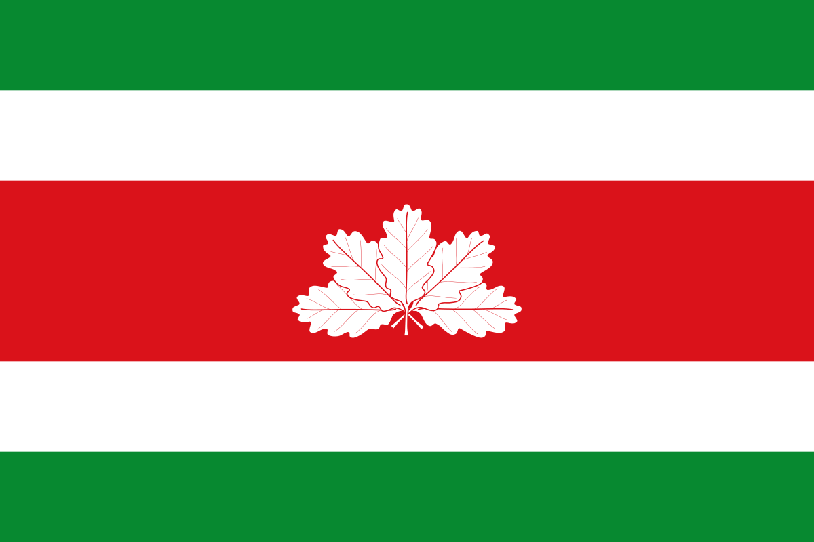
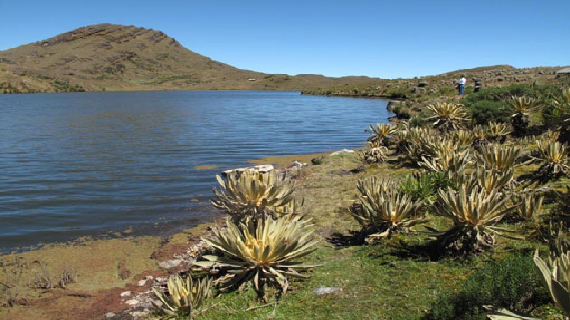

 ECOTURISMO EN BOYACA
Boyacá es uno de los de los treinta y dos departamentos de Colombia,
está situado en el centro-este del país, bajo la cordillera oriental
de los andes. Es un departamento rico en flora y fauna, que cuenta con
diferentes tipos de paisajes para todo tipo de gustos. A continuación,
relacionamos uno de ellos.
Sendero de la Zarza
 Este sendero se ubica en el municipio de Duitama – Vereda la Trinidad,
el cual se encuentra a unos 15 minutos de Duitama en bus. Es un
sendero que parte en un ecosistema de bosque andino bordeando una
quebrada de un pequeño río, pasando por una alta cascada rocosa, para
finalizar en un ecosistema de páramo. Antes de 1963 fue paso
obligatorio de comunicación entre los habitantes del departamento de
Santander con la región de Tundama en Boyacá y los llanos orientales.
Un camino de herradura que contempla la energía de nuestros indígenas.
El recorrido dura aproximadamente 5 horas, dependiendo del ritmo de
caminata, cuenta con caminos angostos, escaleras, cascadas, por lo
cual se recomienda llevar ropa cómoda, hidratación y algo de comida.
Este sendero se ubica en el municipio de Duitama – Vereda la Trinidad,
el cual se encuentra a unos 15 minutos de Duitama en bus. Es un
sendero que parte en un ecosistema de bosque andino bordeando una
quebrada de un pequeño río, pasando por una alta cascada rocosa, para
finalizar en un ecosistema de páramo. Antes de 1963 fue paso
obligatorio de comunicación entre los habitantes del departamento de
Santander con la región de Tundama en Boyacá y los llanos orientales.
Un camino de herradura que contempla la energía de nuestros indígenas.
El recorrido dura aproximadamente 5 horas, dependiendo del ritmo de
caminata, cuenta con caminos angostos, escaleras, cascadas, por lo
cual se recomienda llevar ropa cómoda, hidratación y algo de comida.

Paramo y laguna de siscunsí

Las 5.942 hectáreas de páramo de Sogamoso se encuentran en la vereda
de Las Cintas, Las Cañas y El Mortiñal, el hermoso páramo del
Siscunsí, presentan las mejores alternativas de ecoturismo, por
encontrar allí amplias zonas de frailejones, cascadas naturales,
humedales y la Laguna del Siscunsí. Por ser zona de páramo y llegar
hasta altitudes de 3.850 m.s.n.m. la producción y almacenamiento de
agua son factores fundamentales que se deben tener en cuenta para el
desarrollo de la región y del municipio. Del páramo de Siscunsí se
derivan una serie de acueductos y tomas de regadío que sustentan el
agua para trabajar la mayoría de habitantes de la región y para el
desarrollo agropecuario e industrial. La vegetación de páramo que allí
hay, contiene la diversidad más rica y abundante de las altas cumbres
tropicales, como frailejones, pajonales, arbustos y vegetación
acuática. Su fauna está compuesta por anfibios, insectos, mamíferos
(tinajos, curíes, liebres, etc.). Es muy representativa la Avifauna
conformada por: Mirlas, perdices, el pato zambullidor y el majestuoso
cóndor de los Andes, este último hace parte de un programa de
repoblamiento único en Sur América con 10 cóndores.